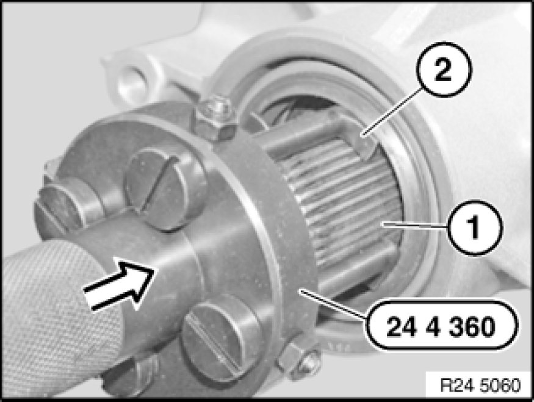

Replacing Output Flange Shaft Seal (GA6L45R)
24 13 014 - Replacing output flange shaft seal (GA6L45R)

Special tools required:
- 23 0 020 23 0 020 Holder
- 23 1 210
- 24 4 360 24 4 360 Extractor
- 24 4 370 24 4 370 Drift

Important!
After completion of work, check transmission fluid level Procedures.
Use only the approved transmission fluid.
Failure to comply with this requirement will result in serious damage to the automatic transmission!

Necessary preliminary tasks:
- Remove underbody protection
- Remove heat shields
- Remove complete exhaust system
- Remove front muffler (N45T/N46T)
- Remove transmission cross-member
- Remove propeller shaft from transmission.
- Release center bearing.
- Tie propeller shaft to one side.
Tasks are described in Removing propeller shaft.
Note:
To rotate propeller shaft, unlock parking gear.
Release screws.
Remove transmission bearing block (1).
Tightening torque 24 71 6AZ 24 71 Transmission Mounts.
Grip output flange (1) with special tool 23 0 020 23 0 020 Holder.
Release nut with special tool 23 1 210.
Tightening torque: 24 13 3AZ Transmission Extension, Bearings, Seals.
Installation Note:
Apply a streak of Loctite 277 over complete thread width.
Replace nut and secure with a mandrel (8 mm) by caulking.

Detach output flange from output shaft.
Remove spacer.

Push special tool 24 4 360 24 4 360 Extractor onto output shaft (1).
Locking hooks (2) must enter completely.
Turn locks (1) counterclockwise.
Screw in bolt (2) until radial shaft seal is released.
Oil sealing lip on radial shaft seal (1).
Drive radial shaft seal (1) firmly home with special tool 24 4 370 24 4 370 Drift.